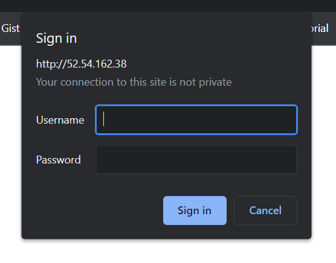

Verify Shiny Server is running
Locate the public IP of your VM and in your web browser enter
http://vm.public.ip:3838/. If Shiny Server is active and running correctly,
you should see something like the following:

Because of the number of computing platforms and the varied processes involved in setting up a virtual machine (VM) on each of them, this tutorial will begin under the assumption that you have already established and connected to a suitable VM. For my own personal uses I am using a Digital Ocean VM with Ubuntu 20.04 Focal Fossa as the OS.
Additionally, this document is effectively just a personal wiki and some steps are pretty specific to my own setup so mileage may vary.
The first step is to install the most recent version of R, as well as a robust set of the most important R packages. {{% callout note %}} This installation will take >= 2 hrs on most VMs. {{% /callout %}}
# Update indices
sudo apt update -y -qq
# Install the dependencies necessary to add a new repository over HTTPS:
sudo apt-get -y install \
dirmngr \
gnupg \
apt-transport-https \
ca-certificates \
software-properties-common
# Add the CRAN repository to your system sources list:
# - Add the signing key (by Michael Rutter) for these repos
# To verify key, run gpg --show-keys /etc/apt/trusted.gpg.d/cran_ubuntu_key.asc
# Fingerprint: 298A3A825C0D65DFD57CBB651716619E084DAB9
sudo wget -qO- https://cloud.r-project.org/bin/linux/ubuntu/marutter_pubkey.asc | sudo tee -a /etc/apt/trusted.gpg.d/cran_ubuntu_key.asc
# - Add the R 4.0 repo from CRAN
sudo add-apt-repository "deb https://cloud.r-project.org/bin/linux/ubuntu focal-cran40/"
# Install base R and dependencies for full set of R packages
sudo apt-get -y install \
r-base \
r-base-dev \
libssl-dev \
libcurl4-openssl-dev \
libxml2-dev \
libfontconfig1-dev \
libcairo2-dev \
libgmp3-dev \
libmpfr-dev \
libv8-dev \
unixodbc-dev \
libpq-dev \
libudunits2-dev \
libgdal-dev \
gsl-bin \
libgsl0-dev \
libharfbuzz-dev \
libfribidi-dev \
cmake
# Install R packages
sudo R -e 'install.packages(read.table("https://gist.githubusercontent.com/dmolitor/f88b3edd1fd02716ff08888a815db35a/raw/8298cc7d28aa0c03a7e0330e338fa7c85d0ee782/r-packages.txt")[["V1"]], Ncpus = parallel::detectCores())'Once R and the packages have been installed, the next step is to install Shiny Server and all its dependencies.
# Install Shiny Server and dependencies
sudo apt-get -y install gdebi-core
wget https://download3.rstudio.org/ubuntu-14.04/x86_64/shiny-server-1.5.17.973-amd64.deb
sudo gdebi -n shiny-server-1.5.17.973-amd64.debLocate the public IP of your VM and in your web browser enter
http://vm.public.ip:3838/. If Shiny Server is active and running correctly,
you should see something like the following:
# Ensure shiny-server directory has full read/write permissions
sudo chmod -R 777 /srv/shiny-server
# Generate new SSH key for connecting to Github (just hit enter for all prompts)
ssh-keygen -t ed25519
eval "$(ssh-agent -s)"
ssh-add ~/.ssh/id_ed25519The steps above generate a new SSH key, but now you must add this SSH key to your Github account. To do so, follow the steps in this article closely. Now that you’ve added the SSH key to your Github account, it’s time to configure your Github credentials and clone your Shiny Server repo to the VM. To do this, execute:
# Configure git credentials
git config --global user.email "you@example.com"
git config --global user.name "Your Name"
# Navigate to shiny-server directory
cd /srv/shiny-server
sudo rm -r *
git init
# Clone repo
git remote add origin git@github.com:path-to-repo-head.git
git pull origin master
git branch --set-upstream-to=origin/master master
cd ~# Install nginx
sudo apt-get -y install nginx
# Edit nginx config
sudo vi /etc/nginx/sites-enabled/defaultThis will open the nginx config file. Add the following lines above the
line that reads server {
map $http_upgrade $connection_upgrade {
default upgrade;
'' close;
}And add the following lines right after the line that reads server_name _;
location /shiny/ {
proxy_pass http://127.0.0.1:3838/;
proxy_http_version 1.1;
proxy_set_header Upgrade $http_upgrade;
proxy_set_header Connection $connection_upgrade;
rewrite ^(/shiny/[^/]+)$ $1/ permanent;
}Now, save the changes. Since you edited the nginx config file you will need to
restart the service with sudo service nginx restart. Now, instead of accessing
Shiny Server with http://vm.public.ip:3838 you should be able to access it
with http://vm.public.ip/shiny.
The final step in configuring nginx is to overwrite the default .html landing
page with a personalized landing page.
{{% callout note %}}
This assumes that you have a file named
index.nginx-debian.html in the root of your shiny-server github repo.
{{% /callout %}}
sudo cp -rf /srv/shiny-server/index.nginx-debian.html /var/www/html/Now, when you access http://vm.public.ip, you should see a pretty landing
page.
Obviously, setting up some form of basic authentication will depend on your desired level of privacy. Also this will probably keep the average person from accessing your apps but definitely is a fairly light level of security. Anywho, let’s proceed…
# Install necessary dependency
sudo apt-get install apache2-utils
# Shut down Shiny Server and nginx
sudo service nginx stop
sudo service shiny-server stop
# Edit nginx default config
sudo vi /etc/nginx/sites-available/defaultOnce you are in the file, you will tweak the existing server function as follows:
server {
listen 80 default_server;
listen [::]:80 default_server;
### Authentication ### <------ YOU MUST COPY/PASTE IN THIS WHOLE AUTH CHUNK
auth_basic "Username and Password are required";
auth_basic_user_file /etc/nginx/.htpasswd;
######################Then, within the location /shiny/ { chunk, enter the following:
auth_basic on;Now, save and exit the file. Next you need to create a username user and
corresponding password user-password at the hint like:
cd /etc/nginx
sudo htpasswd -c /etc/nginx/.htpasswd username
# Restart the services!
cd ~
sudo service nginx start
sudo service shiny-server startYou have now established basic authentication and when you access any page on your server you should see something like the following: 
You have now configured Shiny Server and can view it at
http://vm.public.ip/shiny/! 🎉🥳